Plasma 银行卡激活动效
60fps · 10-30 日报 · X 10-28 【看过画面（抽帧）】
 X
X5.8 秒全片已下载
好在哪银色卡片从表单里浮起来，翻到上方变成激活卡面；每输一位数字，卡上多一个格子，输完卡再滑到底部进入下一步。全程灰白，只有金属反光
可借讲操作流程时，让一个主物体一直留在画面里换位置，不整页切走，步骤就串起来了
可借讲操作流程时，让一个主物体一直留在画面里换位置，不整页切走，步骤就串起来了
审美周精选 · 10-26 至 10-31
从这周 6 份日报（60 条）里挑了 10 条。你 10-30 点过喜欢的两条 60fps UI 动效放在最前面，顺着这个方向又加了 jhey 的转场合集和旋钮数字；其余是片头、3D 讲解、字体和竖屏科普，类型分开。每条标明当时是看过完整视频还是只抽帧看了画面。本周最值得学在文末。喜欢就点心，有想法写在每条下面的「想法」框里
点封面在页面里播放（Vimeo / YouTube / X 需要代理；Vimeo 若没自动开始，再点一下播放键）。觉得好就点「喜欢」，有想法就写在下面的框里保存，我每天出日报前会读，存进偏好和审美库；会多找同类，但每天仍保持类型分散。
60fps · 10-30 日报 · X 10-28 【看过画面（抽帧）】
X5.8 秒全片已下载
60fps · 10-30 日报 · X 10-27 【看过画面（抽帧）】
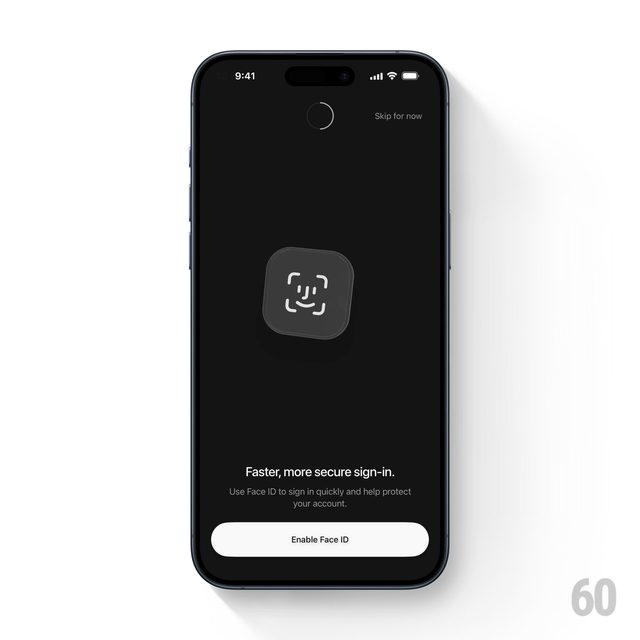
X原帖 3 段视频，只下载、看了第 1 段
transmission 就能做jhey（jh3yy） · 10-31 日报 · X 10-29 【看过画面（抽帧）】
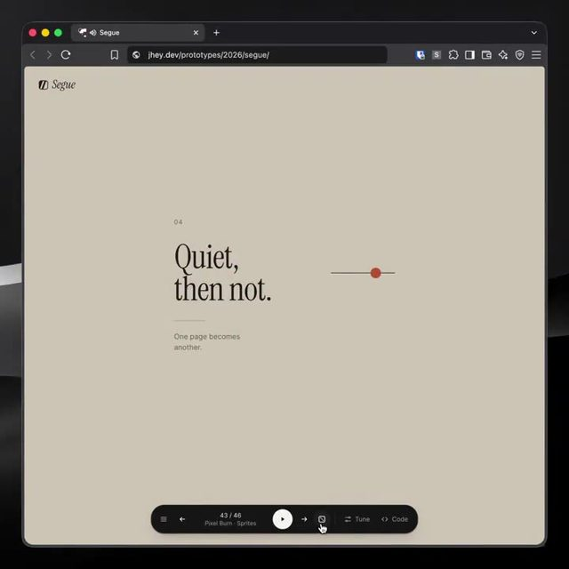
X26 秒全片已下载，抽帧看过
60fps · 10-31 日报 · X 10-30 【看过画面（抽帧）】
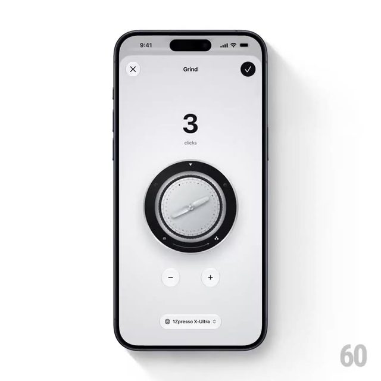
X帖子里有 4 段，只下载并看了第 1 段（26 秒）
Cleo Abram · 10-28 日报 · YouTube Shorts 10-27 【看过视频】
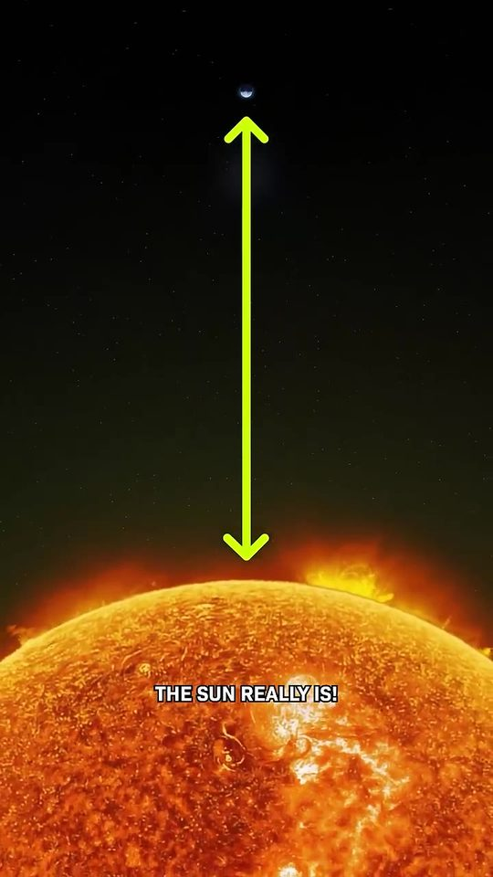
YouTube38 秒全片已下载
Tendril · 10-29 日报 · Vimeo 06-30（超过 30 天） 【看过视频】（完整看过）
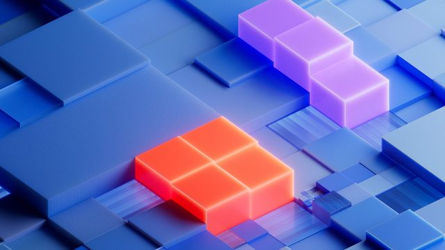
Vimeo52 秒全片已下载，完整看过
InstancedMesh 加 emissive 就行Imaginary Forces · 10-27 日报 · Vimeo 10-05（超过 7 天） 【看过视频】
 Vimeo
Vimeo45 秒全片带声音完整看过
FutureDeluxe · 10-26 日报 · Vimeo 10-14（超过 7 天） 【看过视频】
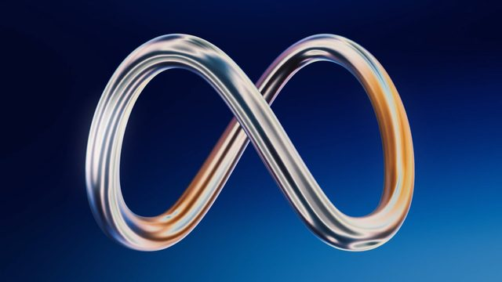
Vimeo完整看过 31 秒，有声，剪辑卡音乐
Studio Dumbar/DEPT® · 10-29 日报 · Vimeo 05-05（超过 30 天） 【看过画面（抽帧）】
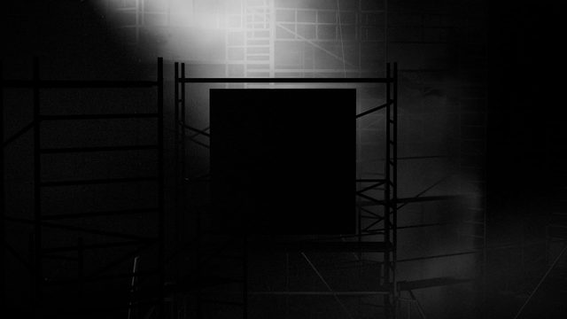
Vimeo68 秒全片已下载
wdth 轴或 scaleX/scaleYKurzgesagt · 10-31 日报 · YouTube 10-29 【看过视频】（完整看过）
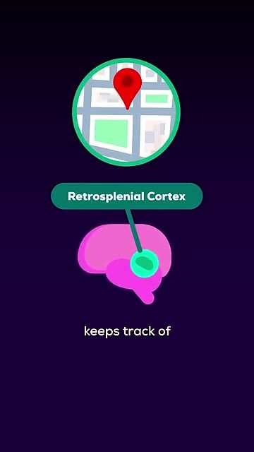
YouTube71 秒全片已下载并完整看过
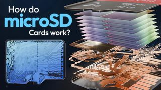
Branch Education · 10-30 完整看过。一层层拆开芯片的做法很好，但和 IBM、Cleo 同属 3D 讲解，这周这类已经够多
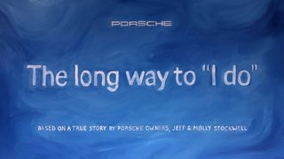
Em Cooper × Tonic DNA · 10-31 抽帧看过。会动的油画，一幕溶解成下一幕，没有一刀剪辑；手绘油画离代码做法远一点，先放这里
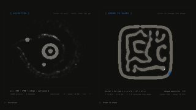
Emil Kowalski · 10-31 抽帧看过。等宽字、方括号标题、文字被一点点改写，很适合讲「AI 在想什么」；本周 UI/代码类名额已满
本周最值得学
从 10-28 日报的细拆压缩而来。选它是因为它最好直接搬进「鱼知道」：讲 AI 里各种「差了多少倍」，用 Three.js + Remotion 就能做，而且和你点过喜欢的 UI 动效一样，都是「一个东西跟着另一个东西精确地动」
y 和要显示的倍数；相机只动 position.yinterpolate(frame,[start,end],[yFrom,yTo])，匀速段用 Easing.linear，冲进终点那段换 Easing.in(Easing.cubic)y 算，和镜头用同一个变量驱动，才不会错位Math.round() 只显示整数，停住那一帧用 spring() 放大回弹一下讲「模型参数差了多少倍」「算力涨了多少倍」：几个模型排一列，镜头往上摇、计数器跟着涨，到每个模型停 1 秒报数，最后换成一个生活里的参照物收尾
喜欢哪条就点那条的心，有想法直接写在每条下面的「想法」框里点保存，下次挑片前我会先读